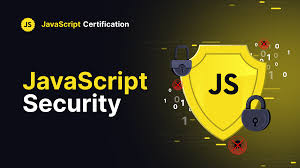

Bài 6: Bảo mật – Ưu thế của Java và thách thức của JavaScript
Cả Java và JavaScript đều là những ngôn ngữ mạnh mẽ, phổ biến nhất thế giới.
Tuy nhiên, khi nói đến bảo mật, chúng lại theo đuổi hai triết lý hoàn toàn khác nhau.
Một bên là “bức tường thép” trong doanh nghiệp, bên kia là “người mở cổng” cho mọi trải nghiệm người dùng.
Java – Nền tảng bảo mật vững chắc trong doanh nghiệp
Java được thiết kế từ đầu với mục tiêu vận hành trong môi trường khép kín, ổn định và kiểm soát nghiêm ngặt.
Nhờ Java Virtual Machine (JVM), mã nguồn Java không chạy trực tiếp trên phần cứng mà qua một lớp trung gian – giúp:
- Giới hạn quyền truy cập hệ thống.
- Ngăn chặn việc thực thi mã độc.
- Quản lý bộ nhớ tự động, giảm lỗi tràn bộ nhớ.
Cùng với đó, Java cung cấp Security Manager, Sandbox, và ClassLoader – những công cụ giúp cách ly và kiểm soát các thành phần chương trình.
Chính vì thế, Java luôn được tin dùng trong các hệ thống ngân hàng, chính phủ, bảo hiểm và tài chính.
JavaScript – Linh hoạt nhưng dễ bị tổn thương
Ngược lại, JavaScript chạy trực tiếp trong trình duyệt người dùng, nơi mọi đoạn mã đều dễ bị quan sát, can thiệp hoặc khai thác.
Điều này khiến JavaScript thường đối mặt với các rủi ro như:
- XSS (Cross-Site Scripting): chèn mã độc vào trang web.
- CSRF (Cross-Site Request Forgery): giả mạo yêu cầu người dùng.
- Injection: tấn công thông qua dữ liệu đầu vào không được kiểm soát.
Tuy nhiên, cộng đồng JS đã và đang cải thiện vấn đề này bằng nhiều biện pháp:
- CSP (Content Security Policy): hạn chế nguồn tải mã độc.
- HTTPS: mã hóa giao tiếp giữa máy chủ và trình duyệt.
- Kiểm tra đầu vào (Input Validation): ngăn dữ liệu nguy hiểm trước khi xử lý.
Hai cách tiếp cận khác nhau, cùng một mục tiêu
- Java xây tường để bảo vệ hệ thống từ bên trong.
- JavaScript dựng lưới để ngăn tấn công từ bên ngoài.
Cả hai đều hướng đến mục tiêu chung: bảo vệ dữ liệu và người dùng.
Dù Java có ưu thế trong môi trường doanh nghiệp, còn JavaScript linh hoạt hơn cho người dùng cuối, nhưng cả hai đều cần kỹ năng và ý thức bảo mật của lập trình viên để phát huy tối đa hiệu quả.
Kết luận
Không có ngôn ngữ nào “an toàn tuyệt đối”.
Sự khác biệt nằm ở tư duy và thói quen viết code của người lập trình.
Nếu Java dạy bạn cách xây tường thành kiên cố, thì JavaScript nhắc bạn rằng tường mạnh đến đâu cũng cần cảnh giác trước mọi cánh cửa mở.